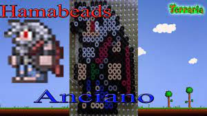

-El anciano
El Anciano es un NPC que puede invocar a Esqueletrón y no puede ir a vivir contigo. No hace nada pero se mantiene en la entrada de una mazmorra. Si el jugador intenta hablar con el por la noche, el te preguntará si le librarías de su maldición, al aceptar se transformará en Esqueletrón. Para entrar en la Mazmorra de la cual es guardián, deberás matarlo, además, una vez derrotado el Esqueletrón, el volverá como el Buhonero al liberarlo de la maldición.
El anciano |
 |
Estadisticas |
Tipo |
NPC |
Salud |
250 |
Defensa |
15 |
Especialidad |
Liberar a esqueletron. |
Bestiario |
Descripcion |
Este desventurado Anciano carga el pesado de una dura maldición. Se dice que en la noche él se transforma en un horrible demonio que vigila la Mazmorra. |
Bioma preferido |
La mazmorra |
IDs internas |
ID de bestiario |
37 |
ID de NPC |
31 |
Frases
- "No te puedo dejarte entrar antes de que me libres de mi maldición."
- "Vuelve esta noche si deseas entrar."
- "No se puede invocar al maestro a la luz del dia."
Noche:
- "Liberame y te prometo el acceso a la mazmorra."
- "Espero que hayas traido amigos."
- "Debes ser fuerte para poder derrotar a mi Maestro."
- "¡Oh por favor! ¡Lucha contra mi captor y librame!, ¡Te lo ruego!"
- "Espero que hayas venido con varios amigos."
- "Extraño, ¿tienes la fuerza para vencer a mi maestro?"
Si aun no has derrotado al Ojo de Cthulhu:
- "¡¡No!! ¡¡Es un suicidio!!"
- "No eres lo suficientemente fuerte para librarme de la maldicion. Vuelve cuando seas más util."
- "Eres patético en este estado, no creas que podras derrotar al maestro así..."
- "Espero que hayan, como... seis amigos escondidos detras tuyo..."
- "No lo hagas forastero seria un suicidio."
Notas
- Si el jugador intenta entrar en la mazmorra antes de matarlo, será atacado por un Guardián de la mazmorra que puede infligir hasta 10000 de daño, causando una muerte instantánea.
- A diferencia de los demás NPC, no tiene armas para defenderse de los monstruos pero es inmune a ellos.
- No puede morir ahogado pero si por trampas de dardos o lava, si muere reaparece casi instantáneamente.
- El Buhonero tiene ojos azules y no rojos, indicando que se libero de su maldición.
- Él y Papá Noel, son los únicos NPCs sin nombres propios.
- Aparece en el cuadro "El Hombre Maldito".
volver al inicio
volver a la pagina NPC